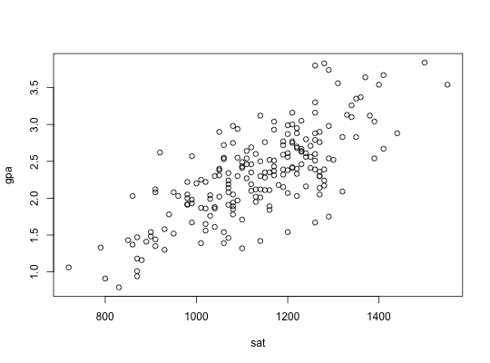
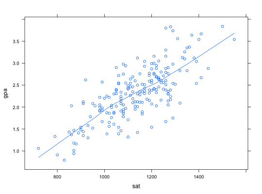

The admissions committee of a comprehensive state university selected at
random the records of 200 second semester freshmen. The results, first
semester college GPA and SAT scores, are stored in the data frame
Grades. Data are used in Example 12.6.
A data frame with 200 observations on the following 2 variables:
Ugarte, M. D., Militino, A. F., and Arnholt, A. T. (2008) Probability and Statistics with R. Chapman & Hall/CRC.
# traditional scatterplot plot(gpa ~ sat, data = Grades)# trellis scatterplot xyplot(gpa ~ sat, data = Grades, type=c("p", "smooth"))